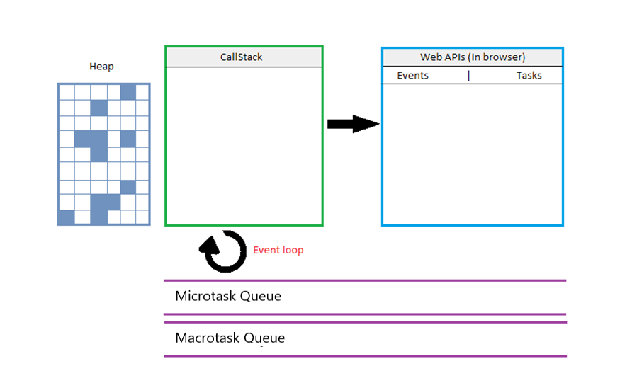

Event loop
Artsemi Shareika diabolicsound
diabolicsound
JavaScript is described as:
- Single - threaded
- Non-blocking
- Asynchronous
- Concurrent
JavaScript Run-time
usual sync code execution
console.log('Print 1');
console.log('Print 2');
console.log('Print 3');
Another example of sync code
function Third(str) {
return str + 'Morgan';
}
function Second() {
return Third('Dexter');
}
function First() {
const name = Second();
console.log("My name is" + name)
};
First();
Asyncronicity
- Allows to call something on a background
- Helps to avoid blocking
- Doesn't negatively affect user interface
Event Loop is responsible for
- Code execution
- Catching and processing events
- Running code from micro- and macroqueues
Async code example
console.log('Hello');
setTimeout(function() {
console.log('Siddhartha');
}, 2000);
console.log('I am');
Microtask Queue
- Introduced in ES6
- Used to process Promises
- The fastest possible way to do something async
- "VIP" queue
Example with both micro- and macrotasks
const bar = () => console.log('bar');
const baz = () => console.log('bar');
const foo = () => {
console.log('foo');
setTimeout(bar, 0);
new Promise((resolve, reject) =>
resolve.('should be right after baz, before bar')
).then(resolve => console.log(resolve));
baz();
}
foo();
// foo
// baz
// should be right after baz, before bar
// bar
Event Loop algorithm
- Do the oldest tasks from macrotask queue(script, for example).
- Do all the tasks from microtask queue until it’s empty.
- Do page rendering.
- If macrotask queue is empty – wait until macrotask appears.
- Go to step 1.
Final thoughts
- JS engine, Call stack and their importance for code execution order
- Web APIs and their role in async processes
- Ways to avoid any kind of problems with synchronicity and asynchronicity
Checkout
- What it the event loop?
- Why was it introduced?
- How can I use it effectively in my projects?
 ?
?